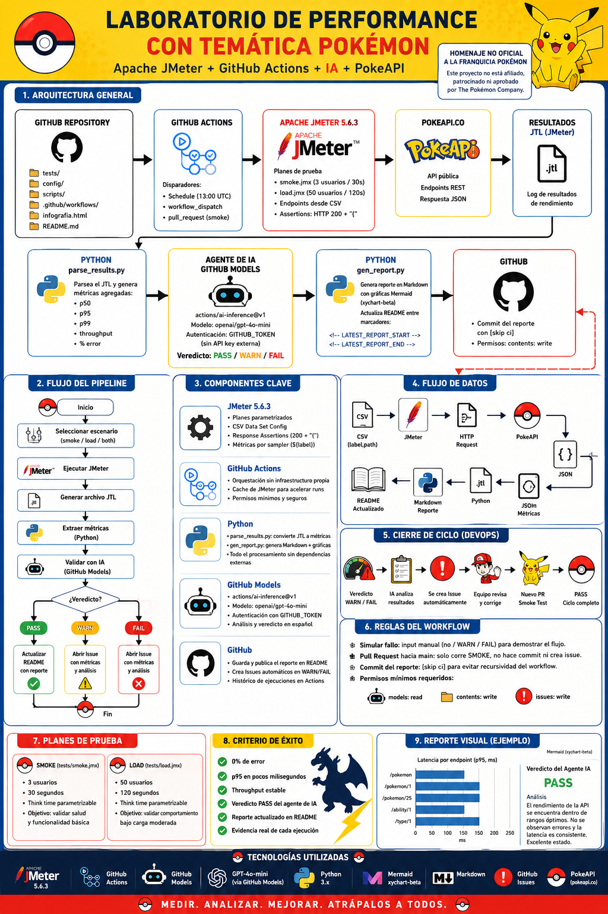

Pruebas de rendimiento con Apache JMeter contra la PokeAPI, orquestadas por GitHub Actions y validadas por un agente de IA. Este es el manual de prácticas del equipo colaborador.
Qué es este laboratorio
El laboratorio ejecuta planes de JMeter (smoke y load) contra endpoints de la PokeAPI, extrae métricas (p50, p95, p99, throughput, % de error), un agente de IA emite un veredicto PASS / WARN / FAIL en español y el resultado se publica como reporte con gráficas. Todo corre en GitHub Actions, sin infraestructura propia.
Apache JMeter 5.6.3 con planes parametrizados y Response Assertions (HTTP 200 + cuerpo JSON).
GitHub Actions por cron diario y ejecución manual, con caché de JMeter y permisos mínimos.
Agente de GitHub Models que analiza las métricas contra los SLOs y da veredicto con recomendaciones.

Antes de empezar
Para la mayoría de las prácticas basta con GitHub (ejecutar el workflow y leer el reporte). Para las prácticas locales necesitas Apache JMeter y Python 3 instalados.
# 1. Clonar el repositorio git clone https://github.com/rba3/Lab_CD_CI_Perfomance.git cd Lab_CD_CI_Perfomance # 2. Correr un smoke local (requiere JMeter en el PATH) jmeter -n -t tests/smoke.jmx -Jendpoints=config/pokeapi-endpoints.csv \ -l results/smoke.jtl -e -o reports/html-smoke # 3. Generar métricas y reporte python3 scripts/parse_results.py results/smoke.jtl smoke reports/metrics-smoke.json python3 scripts/gen_report.py --out reports/report-local.md --date "local" \ --metrics reports/metrics-smoke.json
Regla de convivencia: la PokeAPI es pública. Trabaja siempre con carga moderada y con think time. No subas los umbrales de load sin acordarlo con el equipo.
Manual del colaborador
Ocho prácticas progresivas, de lo básico a lo avanzado. Cada una tiene un objetivo, los pasos y un criterio de éxito claro. Trabaja en una rama y abre un Pull Request con tu evidencia.
Objetivo: ejecutar el laboratorio y entender qué significan las métricas.
Actions → Performance PokeAPI (JMeter) → Run workflow con scenario = smoke.reports/ y la sección "Último reporte" del README.p50, p95, p99, throughput y % de error.Criterio de éxito: puedes explicar la diferencia entre p95 y promedio, y decir qué endpoint fue el más lento en tu corrida.
Objetivo: extender la cobertura sin tocar el .jmx.
config/pokeapi-endpoints.csv y agrega una fila label,path (por ejemplo item,/api/v2/item/1).smoke y confirma que el nuevo endpoint aparece como sampler propio en las métricas.Criterio de éxito: el reporte muestra métricas separadas para tu endpoint nuevo.
Pista: el nombre del sampler usa ${label}, por eso cada fila del CSV se agrupa por separado.
Objetivo: observar cómo cambia la latencia al variar la concurrencia.
scenario = load y ajusta threads, rampup, duration y think.p95 de cada una.Criterio de éxito: una mini tabla comparando 2+ corridas (threads vs p95 vs throughput) con tu conclusión.
Recuerda la regla de convivencia: nada de cargas agresivas contra la API pública.
Objetivo: hacer que la prueba falle cuando la respuesta no es la esperada, no solo por HTTP 200.
.jmx, agrega o ajusta una Response Assertion para validar un campo del JSON (por ejemplo que el cuerpo contenga "name").smoke y confirma que sigue en verde con la validación más estricta.Criterio de éxito: demuestras una corrida en verde con la validación fuerte y una en rojo cuando la respuesta no cumple.
Objetivo: entender cómo el performance protege la rama principal.
main.perf corre solo el escenario smoke.Criterio de éxito: tu PR muestra el check perf en verde y explicas la diferencia con la corrida por cron.
Disponible en el repositorio con cierre de ciclo (rba3/Lab_CD_CI_Perfomance).
Objetivo: ver el flujo DevOps completo cuando el rendimiento se degrada.
simular_fallo = WARN (o FAIL).performance, las métricas y el análisis del agente de IA.Criterio de éxito: existe un issue generado por la corrida y tu comentario con un plan de diagnóstico.
Disponible en el repositorio con cierre de ciclo (rba3/Lab_CD_CI_Perfomance). El input simular_fallo existe porque la PokeAPI casi siempre da PASS.
Objetivo: calibrar cuándo el laboratorio debe alertar.
Criterio de éxito: un PR que cambia un umbral, con la evidencia de la corrida antes y después.
Objetivo: aplicar todo lo aprendido creando un escenario nuevo.
.jmx nuevo (por ejemplo un spike test con subida rápida de hilos) reutilizando el CSV de endpoints.Criterio de éxito: un plan ejecutable en el laboratorio y un reporte con conclusiones defendibles.
Marco normativo
La línea base es la corrida de referencia contra la que se comparan las siguientes: si una medición nueva se desvía de forma significativa, es un hallazgo. El laboratorio fundamenta esa línea base en estándares ISO/IEC e ISTQB.
Qué medimos: la característica Eficiencia de desempeño — comportamiento temporal, utilización de recursos y capacidad.
Cómo lo medimos: tiempo de respuesta (p50 / p95 / p99), throughput y % de error. Son las métricas del reporte.
Cómo evaluamos: requisitos → especificación → diseño → ejecución → conclusión. El pipeline lo automatiza.
Cómo lo documentamos: planeación, diseño, ejecución y reporte. Los planes .jmx y el reporte son los artefactos.
Lenguaje compartido: línea base, prueba de rendimiento, defecto, criterio de aceptación.
La prueba de rendimiento es no funcional; la línea base es el criterio de comparación, con criterios de entrada y salida definidos.
Valores de referencia de las últimas corridas en verde (0% de error). Cada corrida futura se compara contra estos números.
| Escenario | Muestras | p95 (ms) | Throughput | % error | Veredicto |
|---|---|---|---|---|---|
| smoke — 3 usuarios / 30 s | 160 | 27 | 5.5 req/s | 0.0% | PASS |
| load — 50 usuarios / 120 s | 16 812 | 16 | 140 req/s | 0.0% | PASS |
Mapeo 25010 / 25023: p95 = comportamiento temporal · throughput = capacidad · % de error = fiabilidad de la respuesta.
Plan .jmx válido, endpoints en el CSV y ambiente de Actions disponible.
Corrida completa, métricas generadas y veredicto del agente emitido.
Se contrasta contra la línea base y los SLOs; una desviación dispara el cierre de ciclo.
Escalabilidad entre ambientes
Cuando QA y producción no están homologados (prod tiene más CPU y RAM), no basta con extrapolar linealmente. La Ley Universal de Escalabilidad (USL, Neil Gunther) modela cómo escala realmente el throughput al agregar recursos, y permite proyectar prod a partir de mediciones en QA.
load variando N (por ejemplo 5, 10, 20, 40, 80 usuarios o vCPUs) y registra el throughput X(N) de cada punto. Mínimo 5–6 puntos.X_prod(N) ≈ C1_prod × C(N): escalas la capacidad base al hardware de prod y usas la misma curva (α, β) medida en QA. Así estimas throughput, N óptimo y punto de saturación de prod sin tenerlo homologado.Entregable: α, β y N* estimados, más la curva proyectada de prod con su throughput máximo.
Límite del modelo (principio ISTQB: probar depende del contexto): la USL asume nodos homogéneos y misma arquitectura de software. Si prod cambia topología (réplicas de BD, caché, red), α y β pueden cambiar. Valida siempre con al menos un punto real en prod antes de dar la proyección por firme.
Referencia rápida
| Métrica | PASS | WARN | FAIL |
|---|---|---|---|
| % de error | < 0.1% | 0.1% – 1% | > 1% |
| Latencia p95 | < 800 ms | 800 – 1500 ms | > 1500 ms |
| Escenario | Usuarios | Duración | Propósito |
|---|---|---|---|
| smoke | 3 | 30 s | Confirmar que la API responde bien con carga mínima |
| load | 50 | 120 s | Carga sostenida moderada (API pública: no abusar) |